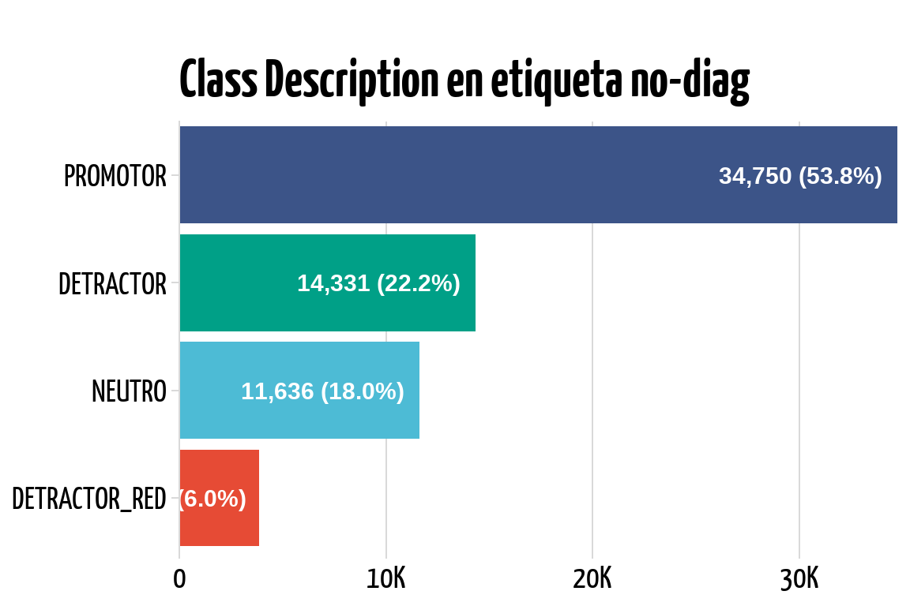

cols_to_remove <- c(
"tipo_cobertura", # 97.7% de los datos dicen TBD y el 2% es NA
"cell_load_3g", # André indica: "mejor utilizar `cell_load_lte`
"users_class", # Ignorar por el momento
"fct_dt", # Actualización del registro a nivel de data
"time_3g", # Métrica vieja que ya no se le dio seguimiento
"bs_ln_nm", # Dejaremos `bs_ln_nm` por contener más información
"thp_required_3g", # Demasiados valores faltantes
"time_lte", # Demasiados valores faltantes,
"bs_ln_cd", # Feature no informativo
"nps_mdll", # Genera fuga de datos,
"bts_sh_nm_1", # Mejor usar bts_sh_nam
"cell_load_lte" # La métrica time_cl y time_lte son mejores
)5 Data prep
Tras un análisis exhaustivo en colaboración con los expertos en la materia (SME, por sus siglas en inglés), se llegó a la conclusión de que ciertas columnas en los conjuntos de datos no aportaban una potencia predictiva significativa para el modelo. Más aún, algunas de estas columnas presentaban el riesgo de causar “fuga de datos” (data leakage), un fenómeno que podría llevar a un modelo sobreajustado y, por ende, a resultados engañosamente optimistas. Este hallazgo fue crucial para la etapa de selección de características, ya que permitió enfocar los esfuerzos en las variables que realmente importan para el rendimiento del modelo.
5.1 Pre-selección de features
5.2 Data cleaning
A continuación se realiza la primera operación de impieza y transformación en el dataframe diag_00, almacenando el resultado en un nuevo dataframe llamado diag_01.
diag_01 <- diag_00 |>
select(
where(
1 \(x) length(unique(x)) != 1 &&
2 mean(is.na(x)) < 0.5),
3 -all_of(cols_to_remove)
) |>
mutate(
4 across(fct_srvy_dt, \(fecha) ymd(fecha)),
5 across(where(is.character), \(col) estandarizar_columnas(col)),
across(msisdn_dd:srvy_id, as.integer)
) |>
relocate(fct_srvy_dt, msisdn_dd, srvy_id)- 1
- Quitar columnas que tengan un solo valor único (constante).
- 2
- Quitar columnas que tengan más del 50% de valores perdidos (NA).
- 3
- Eliminar columnas innecesarias validadas por el equipo de CTL (Close The Loop).
- 4
-
Convertir la columna
fct_srvy_dta tipo fecha. - 5
-
La función
estandarizar_columnas()convierte a mayúscula y elimina espacios en blanco.
5.3 Centinelas
Un valor centinela es un valor especial en el contexto de programación y análisis de datos que se utiliza para indicar una condición como un error, un valor no definido, el final de una lista, entre otros. En el análisis de datos, los valores centinela suelen ser cadenas de texto como “NA”, “TBD” (To Be Determined), “UNKNOWN”, etc., que no tienen un significado numérico pero sirven para indicar que la información no está disponible o aún no se ha decidido.
| feature | tbds |
|---|---|
| trrtry_tf_nm | 3014 |
| trrtry_cmrcl_nm | 3014 |
| cty_nm | 451 |
| stt_nm | 12 |
| class_desc | 0 |
| diag | 0 |
A continuación, realizaremos el reemplazo de los valores centinelas identificados, completando con esta operación la codificación explícita de los mismos en valores perdidos o NAs
diag_02 <- diag_01 |>
arrange(fct_srvy_dt, msisdn_dd, srvy_id) |>
mutate(
across(where(is.character), \(x) na_if(x, "TBD")),
across(where(is.character), \(x) na_if(x, "TO_BE_DETERMINED")))| feature | tbds |
|---|---|
| class_desc | 0 |
| trrtry_tf_nm | 0 |
| trrtry_cmrcl_nm | 0 |
| stt_nm | 0 |
| cty_nm | 0 |
| diag | 0 |
En la tabla Table 5.2 vemos que se han reemplazado correctamente todos los los valores centinelas.
5.4 Colapso respuesta
Mostrar Código
diag_02 |>
tabyl(diag) |>
arrange(desc(n)) |>
adorn_pct_formatting() |>
gt() |>
gt_theme_538() |>
cols_align(align = "center", columns = where(~ is.numeric(.x)))| diag | n | percent |
|---|---|---|
| NO_DIAG | 64588 | 88.9% |
| CAPACIDAD | 2108 | 2.9% |
| OPTIMIZACION | 1322 | 1.8% |
| DISPONIBILIDAD | 989 | 1.4% |
| COBERTURA | 987 | 1.4% |
| NO_TECNICO | 830 | 1.1% |
| TRANSMISION | 663 | 0.9% |
| HOME | 352 | 0.5% |
| FORCING | 282 | 0.4% |
| ENCUESTA | 252 | 0.3% |
| EQUIPO | 241 | 0.3% |
| OTROS_TECNICOS | 30 | 0.0% |
Se observa en la tabla Table 5.3 las categorías iniciales con las que cuenta el set de datos.
Código
diag_02 |>
filter(diag == "NO_DIAG") |>
barra(x = class_desc) +
theme(legend.position = "none") +
labs(title = "Class Description en etiqueta no-diag")
En la figura Figure 5.1 se ve que la la clase predominante llamada NO_DIAG presenta una distribución de descripción de clases en la que los promotores son la mayoría. Es importante entonces, con el fin de poder contar con una clase que genere el mayor contraste posible con las categoría de diagnóstico de detractores, seleccionar únicamente promotores para esta clase.
Definamos entonces las categorías de diagnóstico que quedarán finalmente. La selección se realizó con base a la cantidad de observaciones disponibles.
etiquetas <- c(
"CAPACIDAD",
"OPTIMIZACION",
"COBERTURA",
"DISPONIBILIDAD",
"NO_DIAG")set.seed(2023)diag_03 <- diag_02 |>
1 filter(diag %in% etiquetas) |>
2 split(~ diag) |>
3 map_at("NO_DIAG", \(df) df |>
4 filter(class_desc == "PROMOTOR") |>
5 drop_na() |>
6 slice_sample(n = 1800) |>
7 distinct(msisdn_dd, .keep_all = TRUE)) |>
8 list_rbind() |>
mutate(
across(diag,
9 \(x) case_match(x, "NO_DIAG" ~ "PROMOTOR", .default = diag))) |>
10 select(-class_desc) |>
11 distinct(msisdn_dd, srvy_id, .keep_all = TRUE)- 1
- Dejar únicamente las etiquetas seleccionadas por los SME
- 2
-
Dividir el dataframe en una lista de dataframes según los valores únicos de la columna
diag - 3
-
Modificar únicamente el datraframe de la lista que contiene la etiqueta
NO_DIAG. - 4
-
Aplicar un filtro al dataframe
NO_DIAGpara que solo queden los promotores. - 5
- Eliminar todos los valores perdidos de este dataframe.
- 6
- Tomar una muestra aleatoria de 1800 observaciones.
- 7
- Garantizar que solo queden usuarios únicos con una sola encuesta.
- 8
- Unir la lista en un único dataframe
- 9
-
Cambiar la etiqueta
NO_DIAGporPROMOTOR. - 10
-
Remover la columna
class_descya que puede causar data leakage. - 11
- Remover duplicados, dejando únicamente un usuario y una encuesta única.
La tabla ?tbl-diagnostico muestra los primeros cinco registros y la totalidad de sus columnas.
5.5 Métricas
metr_01 <- metr_00 |>
mutate(across(fct_srvy_dt, ymd)) |>
relocate(fct_srvy_dt, msisdn_dd, srvy_id, r1, bts_sh_nm) |>
arrange(fct_srvy_dt, msisdn_dd) |>
select(-c(cell_load, service_drop_rate))5.6 Disponibilidad
La tabla disponibilidad contiene valores negativos, los cuales son incorrectos para estas métricas. Es necesario convertir estos valores a NA de manera explícita.
disp_01 <- disp_00 |>
mutate(across(everything(), \(x) na_if(x, -1))) |>
select(-time_thrgpt)5.7 Unión
Para la unión utilizaremos una llave compuesta por el número de teléfono del usuario representado por la variable msisdn_dd y el número de encuesta srvy_id.
La primera unión a realizar es entre las métricas de red y la disponibilidad
ctl_00 <- metr_01 |>
inner_join(disp_01, join_by(msisdn_dd, srvy_id))La siguiente unión será contra la tabla maestra diag_03. Posteriormente aplicaremos transformaciones relacionadas a la posición de las columnas y convertir a tipo entero las variables identificadoras.
ctl_01 <- diag_03 |>
inner_join(ctl_00, join_by(msisdn_dd, srvy_id, fct_srvy_dt)) |>
relocate(diag, .after = last_col()) |>
select(-r1) |>
mutate(across(c(msisdn_dd, srvy_id), as.integer))